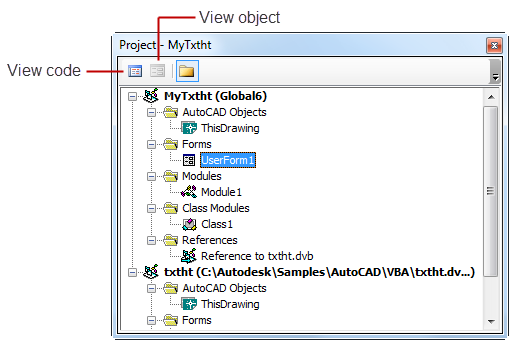

Autodesk AutoCAD 2021: ActiveX Developer's Guide > Getting Started with VBA > About Editing Your Projects with the VBA IDE (VBA/ActiveX) >
The VBA IDE contains a window called the Project window, which displays a list of all loaded VBA projects.
It also displays the code, class, and form modules included in the project, the document associated with the project, all other VBA projects referenced from the project, and the physical location (path) of the project.
The Project window has its own toolbar, which can be used to open various project components for editing. Use the View Code button to open the code for a selected module. Use the View Object button to display selected objects such as forms.

The Project window is visible by default. If it is not visible, select Project window from the View menu, or press Ctrl+R.